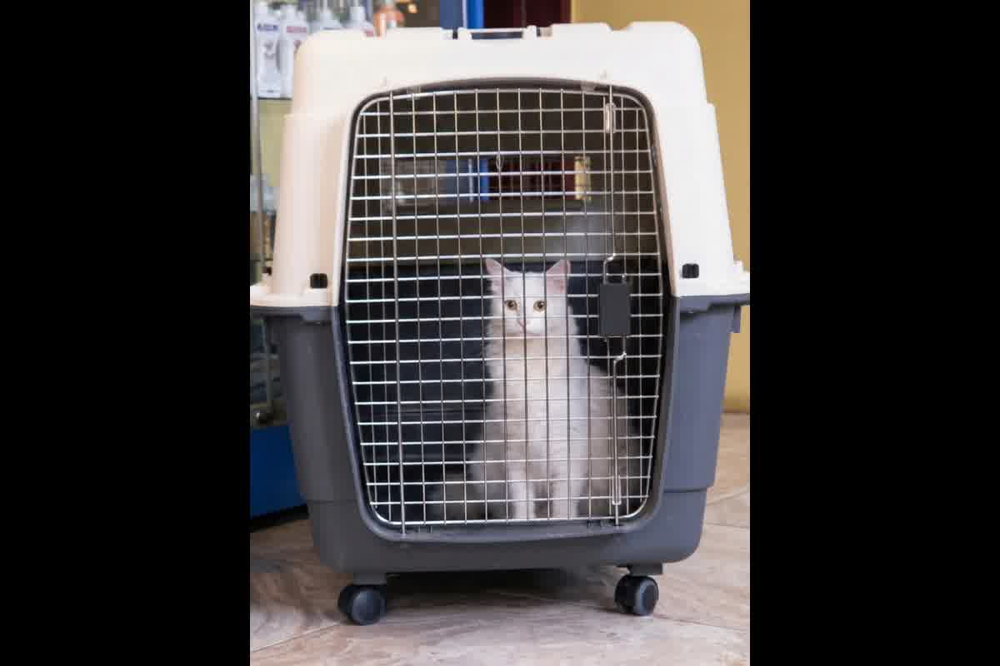
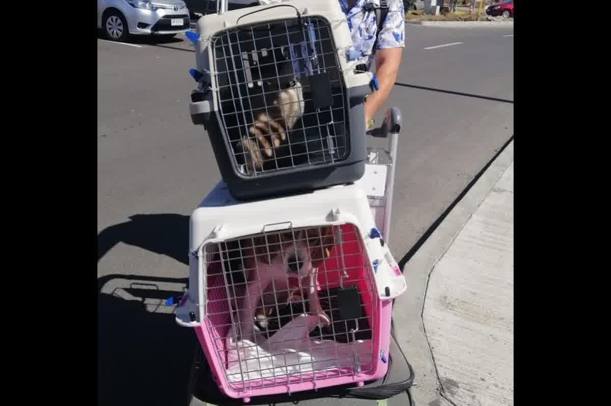

Guía técnica de la Dra. Jessica Camacho sobre el transportín ideal para viajar en avión: medidas, materiales y errores frecuentes según normativa IATA.

La denegación de embarque en el mostrador del aeropuerto suele ocurrir porque el contenedor no permite que el animal mantenga una postura fisiológica neutra. Entender el transportín ideal para viajar en avión: medidas, materiales y errores frecuentes evita que un proceso de exportación gestionado durante meses colapse minutos antes del despegue. En Trujillo, vemos con frecuencia familias que adquieren jaulas basándose en el precio, ignorando que el estándar IATA LAR es una norma de bioseguridad y bienestar, no una sugerencia logística.
El contenedor debe garantizar que el perro o gato pueda ponerse de pie con la cabeza erguida sin tocar el techo, girar sobre sí mismo y recostarse en una posición natural. La normativa exige que la altura de la jaula sea al menos 5 centímetros superior al punto más alto de la cabeza o las orejas del animal en bipedestación. Si el perro viaja con las orejas tocando la parte superior, el inspector de rampa tiene la autoridad para declarar el contenedor como no apto por riesgo de lesiones cervicales y estrés por confinamiento.
La ventilación es el segundo factor crítico y debe ocupar al menos el 16% de la superficie total de las cuatro paredes del contenedor. En vuelos internacionales desde Perú, el flujo de aire pasivo previene el golpe de calor durante las esperas en pista, especialmente en escalas con climas tropicales donde la temperatura interna de la jaula sube rápidamente. Los fundamentos sobre cómo el espacio influye en la respuesta neuroendocrina están detallados en El certificado de salud en el movimiento internacional de perros y gatos: examen clínico, trazabilidad sanitaria y validez documental.

Las jaulas para bodega deben ser de plástico rígido, metal o madera sólida, siendo el plástico de alta densidad el material más eficiente por su relación entre peso y resistencia. Los contenedores que se ensamblan mediante clips de plástico sin tornillos metálicos están prohibidos para el transporte internacional debido al riesgo de apertura accidental durante las turbulencias. Un error que vemos en consulta es el uso de maletines de tela en bodega; estos solo están permitidos en cabina y bajo límites de peso que suelen oscilar entre los 8 y 10 kilogramos totales.
El suelo debe ser estanco y estar cubierto por material absorbente que retenga los fluidos sin permitir filtraciones hacia el exterior del contenedor. La puerta debe contar con un sistema de cierre centralizado que bloquee la parte superior e inferior de forma simultánea, evitando que el animal pueda forzar las esquinas mediante palanca con el hocico. La integridad del contenedor protege al animal de impactos externos y asegura que el personal de estiba pueda manipular la carga sin riesgos de mordeduras o escapes accidentales en la zona de carga.
El diseño del transportín debe contemplar bebederos de doble compartimento fijados a la puerta, los cuales deben poder rellenarse desde el exterior sin necesidad de abrir la jaula. La hidratación técnica previene la viscosidad sanguínea excesiva en condiciones de hipobaria, reduciendo la carga de trabajo del miocardio durante el ascenso y descenso. En Trujillo, recomendamos el uso de recipientes que permitan congelar el agua previamente para que se derrita gradualmente, asegurando disponibilidad de líquido incluso en trayectos transatlánticos largos.
La presencia de juguetes, collares o correas dentro del contenedor representa un peligro de estrangulamiento o asfixia por ingesta de cuerpos extraños ante cuadros de pánico. El animal debe viajar únicamente con un material absorbente limpio y, opcionalmente, una prenda con el olor del propietario que reduzca la reactividad del sistema nervioso central. La seguridad biológica en el transporte aéreo de mascotas exige que el microambiente interno sea lo más aséptico y libre de obstáculos posible para facilitar la termorregulación mediante el jadeo.
La desensibilización al transportín es un proceso que toma entre seis y ocho semanas para que el perro lo identifique como una zona de baja reactividad. Introducir al animal en una jaula desconocida el mismo día del vuelo dispara los niveles de cortisol y lactato, aumentando el riesgo de fallo metabólico por estrés agudo. En nuestra clínica evaluamos si el animal presenta signos de ansiedad por confinamiento antes de emitir el certificado de salud, ya que la integridad física del paciente depende de su estabilidad emocional durante el encierro.
El etiquetado externo debe incluir la señalética de "Animal Vivo" y las flechas de posición vertical en al menos dos caras del contenedor. El expediente documental, incluyendo la copia del Certificado Zoosanitario de Exportación emitido por SENASA, debe estar adherido en una bolsa transparente resistente al agua en la parte superior. En Perú, los errores de etiquetado son una causa frecuente de retrasos en el terminal de carga, lo que expone al animal a tiempos de espera innecesarios en áreas con ventilación limitada y ruido excesivo.
La verificación de la tornillería y el estado de la malla metálica debe realizarse 24 horas antes de la entrega en el terminal aéreo. El desgaste por uso previo o la presencia de óxido en la puerta son motivos suficientes para que la aerolínea rechace el bulto por incumplimiento de seguridad. La elección de el transportín ideal para viajar en avión: medidas, materiales y errores frecuentes finaliza con una inspección técnica que garantice que ningún elemento interno pueda desprenderse y causar lesiones ante movimientos bruscos de la aeronave.
La elección de una jaula inadecuada provocará que su mascota sea rechazada en el aeropuerto, perdiendo el vuelo y la validez de sus certificados sanitarios. Zoovet Travel audita y certifica contenedores bajo normas IATA en Trujillo para asegurar que el transportín ideal para viajar en avión: medidas, materiales y errores frecuentes cumpla con cada rigor técnico. Proteja su inversión y la vida de su compañero con asesoría experta.